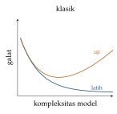
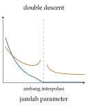

Bab 1
Belajar dari Data
Kerangka di bab ini tidak datang dari satu kuliah. Ia muncul pertama kali di kuliah supervised learning pada semester pertama, lalu kembali di kuliah unsupervised, di kuliah dasar-dasar machine learning, dan di bagian pembuka kuliah geometric deep learning. Karena dipakai oleh begitu banyak kuliah, saya menaruhnya di depan.
Semua yang ada di buku ini, dari LSTM sampai PINN, berdiri di atas satu gagasan sederhana: kita punya contoh, dan kita ingin aturan yang juga berlaku untuk contoh yang belum pernah dilihat. Bab ini membahas gagasan itu secara jujur. Apa yang sebenarnya kita minimalkan? Mengapa model yang sempurna di data latih bisa gagal di data baru? Dan mengapa dimensi tinggi membuat semuanya lebih sulit?
Tiga cara belajar
Bayangkan tiga murid. Murid pertama belajar dengan kunci jawaban: setiap soal latihan punya jawaban benar, dan ia menyesuaikan cara berpikirnya sampai jawabannya cocok. Murid kedua hanya diberi setumpuk soal tanpa jawaban. Ia mengelompokkan soal yang mirip dan menemukan polanya sendiri. Murid ketiga tidak diberi soal sama sekali. Ia mencoba sesuatu, lalu gurunya hanya berkata “bagus” atau “kurang”, kadang baru setelah banyak langkah.
Murid pertama mewakili supervised learning, di mana setiap input \(\boldsymbol{x}\) datang bersama target \(y\). Murid kedua mewakili unsupervised learning, di mana hanya ada \(\boldsymbol{x}\) dan kita mencari strukturnya: kelompok, arah utama, atau bentuk distribusinya. Murid ketiga mewakili reinforcement learning, tempat sebuah agen bertindak, menerima reward, dan harus menebak tindakan mana yang pantas dipuji (Bab 16). Di antara ketiganya ada bentuk campuran. Self-supervised learning, misalnya, membuat target dari data itu sendiri, seperti menebak kata yang ditutup dalam sebuah kalimat. Hampir semua model bahasa besar dilatih dengan cara ini. Bab ini berfokus pada murid pertama, karena kerangka berpikirnya dipakai di mana-mana.
Kerangka supervised learning
Kita menganggap data berasal dari sebuah distribusi gabungan \(p(\boldsymbol{x},y)\) yang tidak kita ketahui. Yang kita miliki hanyalah sampel \(\mathcal{D}=\{(\boldsymbol{x}_n,y_n)\}_{n=1}^N\) yang diambil secara independen dari distribusi itu, asumsi yang biasa disebut i.i.d. Kita lalu memilih sebuah model \(f(\boldsymbol{x};\boldsymbol{w})\) dari suatu model class \(\mathcal{F}\), dan sebuah loss function \(L(y,f(\boldsymbol{x}))\) yang mengukur seberapa buruk tebakan kita. Dua besaran kemudian menjadi pusat perhatian: \[\begin{aligned} R(f) &= \mathbb{E}_{(\boldsymbol{x},y)\sim p}\big[L(y,f(\boldsymbol{x}))\big] = \int L(y,f(\boldsymbol{x}))\,p(\boldsymbol{x},y)\,\mathrm{d}\boldsymbol{x}\,\mathrm{d}y, \label{eq:risk}\\ \hat R_N(f) &= \frac1N\sum_{n=1}^N L(y_n,f(\boldsymbol{x}_n)). \label{eq:emprisk} \end{aligned}\] Yang pertama disebut generalization error atau risiko sejati. Yang kedua disebut empirical risk atau training error. Yang sebenarnya kita inginkan adalah \(R(f)\) kecil, tetapi yang bisa kita hitung hanya \(\hat R_N(f)\). Empirical risk minimization (ERM) memilih \(\hat f=\operatorname*{arg\,min}_{f\in\mathcal{F}}\hat R_N(f)\) dan berharap \(R(\hat f)\) ikut kecil. Hampir seluruh teori generalisasi pada dasarnya bertanya kapan harapan ini masuk akal.
Seandainya kita mengetahui \(p(\boldsymbol{x},y)\) dengan sempurna, ada prediktor terbaik yang mungkin, yaitu Bayes-optimal predictor \(f^*\), dengan risiko \(R^*=R(f^*)\) yang disebut Bayes risk. Untuk loss kuadrat, prediktor itu adalah rata-rata bersyarat \(f^*(\boldsymbol{x})=\mathbb{E}[y\mid\boldsymbol{x}]\). Alasannya mudah dilihat. Tetapkan satu \(\boldsymbol{x}\) dan cari bilangan \(c\) yang meminimalkan \(\mathbb{E}[(y-c)^2\mid\boldsymbol{x}]\). Turunan terhadap \(c\) adalah \(-2\,\mathbb{E}[y-c\mid\boldsymbol{x}]\), yang bernilai nol tepat ketika \(c=\mathbb{E}[y\mid\boldsymbol{x}]\). Kalau loss diganti dengan \(|y-c|\), jawaban optimalnya berubah menjadi median bersyarat. Jadi pilihan loss menentukan statistik apa yang akan ditiru oleh model. Untuk klasifikasi dengan loss 0–1, prediktor Bayes memilih kelas dengan peluang bersyarat terbesar. Bayes risk umumnya tidak nol, karena data sendiri berisik: dua pasien dengan hasil laboratorium yang sama bisa saja punya diagnosis yang berbeda.
Dari asumsi noise ke fungsi loss
Kuliah dasar-dasar machine learning menekankan satu hal yang sering terlewat: fungsi loss bukan pilihan sembarang. Ia lahir dari asumsi tentang bagaimana data dibangkitkan. Misalkan \(y=f(\boldsymbol{x};\boldsymbol{w})+\varepsilon\) dengan noise \(\varepsilon\sim\mathcal{N}(0,\sigma^2)\). Likelihood satu titik data adalah \[p(y_n\mid\boldsymbol{x}_n,\boldsymbol{w})=\frac{1}{\sqrt{2\pi\sigma^2}}\exp\!\Big(-\frac{(y_n-f(\boldsymbol{x}_n;\boldsymbol{w}))^2}{2\sigma^2}\Big).\] Karena data i.i.d., likelihood seluruh data adalah hasil kali, dan negatif log-likelihoodnya menjadi \[-\log p(\mathcal{D}\mid\boldsymbol{w})=\frac{1}{2\sigma^2}\sum_{n=1}^N\big(y_n-f(\boldsymbol{x}_n;\boldsymbol{w})\big)^2+\frac N2\log(2\pi\sigma^2).\] Suku kedua tidak bergantung pada \(\boldsymbol{w}\). Maka maximum likelihood dengan noise Gauss sama persis dengan meminimalkan mean squared error. Dengan jalan yang sama, noise Laplace menghasilkan loss mutlak \(|y-f|\), keluaran Bernoulli dengan peluang \(\sigma(f)\) menghasilkan binary cross-entropy, dan keluaran kategorikal dengan softmax menghasilkan cross-entropy (Tabel 1.1).
Kasus Bernoulli layak diturunkan juga, karena loss ini dipakai di hampir semua pengklasifikasi. Misalkan label \(y\in\{0,1\}\) dan model mengeluarkan peluang \(p=\sigma(f(\boldsymbol{x};\boldsymbol{w}))\) bahwa \(y=1\). Peluang satu label bisa ditulis dalam satu rumus, \(p(y\mid\boldsymbol{x})=p^{\,y}(1-p)^{1-y}\), karena untuk \(y=1\) rumus itu menjadi \(p\) dan untuk \(y=0\) menjadi \(1-p\). Negatif log-likelihood seluruh data adalah \[-\log p(\mathcal D\mid\boldsymbol{w})=-\sum_{n=1}^N\Big[y_n\log p_n+(1-y_n)\log(1-p_n)\Big],\] dan itulah binary cross-entropy. Sebagai contoh, kalau model memberi peluang \(0{,}9\) untuk contoh yang labelnya satu, loss-nya \(-\ln0{,}9\approx0{,}105\). Kalau peluangnya hanya \(0{,}1\), loss-nya \(-\ln0{,}1\approx2{,}30\), lebih dari dua puluh kali lebih besar. Loss ini menghukum keyakinan yang salah dengan keras sekali, dan sifat itulah yang membuat model terdorong memberi peluang yang terkalibrasi.
| Asumsi pada \(y\mid\boldsymbol{x}\) | Loss dari \(-\log\) likelihood | Sifat |
|---|---|---|
| Gauss \(\mathcal{N}(f,\sigma^2)\) | kuadrat, \((y-f)^2\) | peka terhadap pencilan |
| Laplace | mutlak, \(|y-f|\) | lebih tahan pencilan |
| Bernoulli, \(p=\sigma(f)\) | binary cross-entropy | klasifikasi dua kelas |
| Kategorikal, \(p=\mathrm{softmax}(f)\) | cross-entropy | klasifikasi banyak kelas |
Timbangan dapur memberi gambaran yang pas. Kalau timbangan Anda kadang meleset sedikit ke atas atau ke bawah secara acak, rata-rata dari beberapa kali menimbang adalah tebakan yang baik, dan itulah loss kuadrat. Tetapi kalau sesekali seekor kucing melompat ke atas timbangan, satu hasil bisa meleset jauh sekali. Rata-rata akan ikut tertarik oleh angka itu, sedangkan median tidak. Noise berekor tebal seperti Laplace menghasilkan loss mutlak, yang tidak terlalu peduli pada satu pencilan.
Prior sebagai regularisasi
Maximum likelihood hanya mendengarkan data. Kalau datanya sedikit, model mudah percaya pada kebetulan. Pendekatan Bayesian menambahkan prior \(p(\boldsymbol{w})\), yaitu keyakinan awal tentang parameter sebelum melihat data. Teorema Bayes kemudian memberi posterior \[p(\boldsymbol{w}\mid\mathcal{D})=\frac{p(\mathcal{D}\mid\boldsymbol{w})\,p(\boldsymbol{w})}{p(\mathcal{D})},\] dan estimasi maximum a posteriori (MAP) memaksimalkannya. Dalam bentuk logaritma, \[\hat{\boldsymbol{w}}_{\mathrm{MAP}}=\operatorname*{arg\,min}_{\boldsymbol{w}}\Big[-\log p(\mathcal{D}\mid\boldsymbol{w})-\log p(\boldsymbol{w})\Big].\] Dengan prior Gauss \(\boldsymbol{w}\sim\mathcal{N}(\boldsymbol 0,\alpha^{-1}\boldsymbol I)\), suku kedua menjadi \(\tfrac\alpha2\|\boldsymbol{w}\|_2^2\). Itulah weight decay, atau ridge regression dalam bahasa statistik. Dengan prior Laplace, suku kedua menjadi \(\lambda\|\boldsymbol{w}\|_1\), yang dikenal sebagai lasso (Tibshirani 1996). Lasso punya sifat yang menarik: ia cenderung membuat banyak bobot bernilai tepat nol. Sifat ini nanti menjadi inti metode SINDy untuk menemukan persamaan dari data (Bab 31).
Dalam simulasi, kita sering tahu banyak hal sebelum melihat data. Aliran harus kekal massa, temperatur dalam kelvin tidak boleh negatif, dan solusi harus simetris kalau geometrinya simetris. Semua itu bisa dibaca sebagai prior yang kuat. PINN (Bab 29) memasukkan persamaan diferensial ke dalam loss dengan cara yang mirip suku \(-\log p(\boldsymbol{w})\) di atas, hanya saja “prior”-nya menyangkut fungsi keluaran, bukan bobot.
Regresi linear sampai tuntas
Semua gagasan di atas bisa dilihat bekerja pada model paling sederhana. Regresi linear memodelkan \(\hat y=\boldsymbol{w}^\top\boldsymbol{x}\), dengan komponen konstan disisipkan ke dalam \(\boldsymbol{x}\) sebagai fitur bernilai satu. Untuk \(N\) contoh yang disusun sebagai baris matriks \(\boldsymbol{X}\) dan target \(\boldsymbol{y}\), loss kuadrat rata-rata adalah \(\tfrac1N\|\boldsymbol{y}-\boldsymbol{X}\boldsymbol{w}\|^2\). Gradiennya terhadap \(\boldsymbol{w}\) adalah \(-\tfrac2N\boldsymbol{X}^\top(\boldsymbol{y}-\boldsymbol{X}\boldsymbol{w})\), dan menyamakannya dengan nol memberi normal equations \[\boldsymbol{X}^\top\boldsymbol{X}\,\boldsymbol{w}=\boldsymbol{X}^\top\boldsymbol{y},\qquad \hat{\boldsymbol{w}}=\big(\boldsymbol{X}^\top\boldsymbol{X}\big)^{-1}\boldsymbol{X}^\top\boldsymbol{y}.\] Namanya berasal dari tafsiran geometrisnya. Syarat \(\boldsymbol{X}^\top(\boldsymbol{y}-\boldsymbol{X}\hat{\boldsymbol{w}})=\boldsymbol0\) berarti sisa \(\boldsymbol{y}-\boldsymbol{X}\hat{\boldsymbol{w}}\) tegak lurus, normal, terhadap setiap kolom \(\boldsymbol{X}\). Prediksi \(\boldsymbol{X}\hat{\boldsymbol{w}}\) adalah proyeksi ortogonal \(\boldsymbol{y}\) ke ruang yang direntang fitur-fitur, titik terdekat yang bisa dicapai model.
Untuk satu fitur ditambah konstanta, rumusnya menyederhana menjadi kemiringan \(\hat w_1=S_{xy}/S_{xx}\) dan titik potong \(\hat w_0=\bar y-\hat w_1\bar x\), dengan \(S_{xy}=\sum(x_i-\bar x)(y_i-\bar y)\) dan \(S_{xx}=\sum(x_i-\bar x)^2\). Ambil tiga titik \((1,2)\), \((2,3)\), dan \((3,5)\). Rata-ratanya \(\bar x=2\) dan \(\bar y=10/3\). Simpangan \(x\) adalah \((-1,0,1)\) dan simpangan \(y\) adalah \((-4/3,-1/3,5/3)\), sehingga \(S_{xy}=4/3+0+5/3=3\) dan \(S_{xx}=2\). Kemiringannya \(1{,}5\) dan titik potongnya \(10/3-3=1/3\). Garis \(\hat y=1/3+1{,}5x\) meramal \(1{,}83\), \(3{,}33\), dan \(4{,}83\), dengan sisa \(0{,}17\), \(-0{,}33\), dan \(0{,}17\). Jumlah sisanya nol, dan jumlah sisa dikali \(x\) juga nol, persis seperti yang diminta normal equations.
Ridge regression menambahkan \(\lambda\|\boldsymbol{w}\|^2\), dan dengan langkah yang sama solusinya menjadi \(\hat{\boldsymbol{w}}=(\boldsymbol{X}^\top\boldsymbol{X}+\lambda\boldsymbol I)^{-1}\boldsymbol{X}^\top\boldsymbol{y}\). Penambahan \(\lambda\) pada diagonal punya dua efek. Secara statistik, ia menarik bobot ke nol, sesuai prior Gauss dari Subbab 1.4. Secara numerik, ia membuat matriks yang dibalik selalu bisa dibalik dan kondisinya lebih baik. Kalau dua fitur hampir identik, \(\boldsymbol{X}^\top\boldsymbol{X}\) hampir singular, dan regresi biasa bisa memberi bobot \(+1000\) dan \(-999\) yang saling menghapus. Ridge memilih \(0{,}5\) dan \(0{,}5\).
Dari regresi ke klasifikasi
Untuk label biner, regresi logistik memodelkan peluang kelas positif sebagai \(p=\sigma(\boldsymbol{w}^\top\boldsymbol{x})\) dengan \(\sigma(a)=1/(1+e^{-a})\). Loss-nya adalah binary cross-entropy yang diturunkan di atas. Gradiennya punya bentuk yang sangat rapi. Turunan sigmoid adalah \(\sigma'(a)=\sigma(a)(1-\sigma(a))\), dan turunan \(-y\ln p-(1-y)\ln(1-p)\) terhadap \(p\) adalah \(-y/p+(1-y)/(1-p)\). Mengalikan keduanya lewat aturan rantai, \[\frac{\partial\mathcal{L}}{\partial a}=\Big(-\frac yp+\frac{1-y}{1-p}\Big)p(1-p)=-y(1-p)+(1-y)p=p-y,\] sehingga \(\nabla_{\boldsymbol{w}}\mathcal{L}=(p-y)\boldsymbol{x}\). Gradiennya adalah galat prediksi dikali input, bentuk yang sama dengan regresi linear. Kalau model yakin \(p=0{,}9\) untuk contoh yang ternyata negatif, gradiennya \(0{,}9\boldsymbol{x}\), dorongan kuat untuk memperbaiki. Kalau ia sudah benar dengan \(p=0{,}99\) untuk contoh positif, dorongannya hanya \(-0{,}01\boldsymbol{x}\). Berbeda dengan regresi linear, tidak ada solusi tertutup, karena \(p\) bergantung nonlinear pada \(\boldsymbol{w}\), sehingga regresi logistik dilatih dengan metode iteratif dari Bab 4. Batas keputusannya, tempat \(p=0{,}5\), adalah bidang \(\boldsymbol{w}^\top\boldsymbol{x}=0\): regresi logistik adalah pengklasifikasi linear dengan keluaran peluang.
Mengukur generalisasi
Risiko sejati Persamaan (1.1) tidak bisa dihitung, jadi kita memperkirakannya. Cara paling sederhana adalah menyisihkan sebagian data yang tidak pernah disentuh selama pelatihan, lalu menghitung loss rata-rata di sana. Karena titik-titik uji itu independen dari model yang sudah jadi, rata-ratanya adalah estimator tak bias untuk \(R(\hat f)\).
Kesulitan muncul karena kita juga harus memilih hyperparameter: jumlah lapisan, laju belajar, kekuatan regularisasi. Kalau data uji dipakai untuk memilih, ia ikut bocor ke dalam model dan estimasinya menjadi terlalu optimistis. Karena itu data biasanya dibagi tiga: data latih, data validasi untuk memilih hyperparameter, dan data uji yang disentuh sekali saja di akhir. Kalau data sedikit, \(k\)-fold cross-validation membagi data menjadi \(k\) bagian dan melatih model \(k\) kali, setiap kali dengan satu bagian sebagai validasi. Rata-rata skornya menjadi estimasi generalisasi, dengan biaya \(k\) kali pelatihan. Perlu diingat bahwa cross-validation menghasilkan estimasi kinerja, bukan satu model. Model akhir biasanya dilatih ulang pada seluruh data latih.
Ada beberapa kebocoran yang sering terjadi tanpa disadari. Menormalisasi seluruh data, termasuk data uji, sebelum dibagi berarti statistik data uji ikut masuk ke pelatihan. Rata-rata dan simpangan baku seharusnya dihitung dari data latih saja. Untuk deret waktu atau hasil simulasi yang berurutan, membagi data secara acak juga menyesatkan. Titik-titik yang berdekatan dalam waktu hampir identik, sehingga ujian menjadi terlalu mudah. Data seperti ini sebaiknya dibagi menurut waktu atau menurut kasus simulasi.
Bias, varians, dan dua bentuk kurva
Ambil loss kuadrat dan anggap \(y=g(\boldsymbol{x})+\varepsilon\) dengan \(\mathbb{E}[\varepsilon]=0\) dan \(\mathrm{Var}[\varepsilon]=\sigma^2\). Model \(\hat f_{\mathcal D}\) bergantung pada data latih \(\mathcal D\) yang acak. Untuk satu titik \(\boldsymbol{x}\), ekspektasi galatnya terhadap semua kemungkinan data latih dan noise terurai menjadi tiga suku (Geman, Bienenstock, dan Doursat 1992): \[\mathbb{E}\big[(y-\hat f_{\mathcal D}(\boldsymbol{x}))^2\big] =\underbrace{\big(g(\boldsymbol{x})-\mathbb{E}_{\mathcal D}[\hat f_{\mathcal D}(\boldsymbol{x})]\big)^2}_{\text{bias}^2} +\underbrace{\mathbb{E}_{\mathcal D}\big[(\hat f_{\mathcal D}(\boldsymbol{x})-\mathbb{E}_{\mathcal D}[\hat f_{\mathcal D}(\boldsymbol{x})])^2\big]}_{\text{varians}} +\underbrace{\sigma^2}_{\text{noise}}.\] Bias mengukur seberapa jauh rata-rata model dari kebenaran. Varians mengukur seberapa banyak model berubah kalau data latihnya diganti. Noise tidak bisa dikurangi oleh model apa pun.
Penurunannya hanya memakai satu trik: tambahkan dan kurangkan besaran yang sama. Tulis singkat \(\hat f=\hat f_{\mathcal D}(\boldsymbol{x})\), \(\bar f=\mathbb{E}_{\mathcal D}[\hat f]\), dan \(g=g(\boldsymbol{x})\). Karena \(y=g+\varepsilon\), \[y-\hat f=\varepsilon+(g-\bar f)+(\bar f-\hat f).\] Kuadratkan, lalu ambil ekspektasi. Noise \(\varepsilon\) berasal dari titik uji dan independen dari data latih, sehingga semua suku silang yang memuat \(\varepsilon\) hilang karena \(\mathbb{E}[\varepsilon]=0\). Suku silang \(2(g-\bar f)\mathbb{E}_{\mathcal D}[\bar f-\hat f]\) juga hilang, karena \(g-\bar f\) tidak acak dan \(\mathbb{E}_{\mathcal D}[\hat f]=\bar f\). Yang tersisa adalah tiga kuadrat: \(\mathbb{E}[\varepsilon^2]=\sigma^2\), \((g-\bar f)^2\), dan \(\mathbb{E}_{\mathcal D}[(\hat f-\bar f)^2]\), persis tiga suku di atas.
Contoh angka membuatnya konkret. Misalkan nilai sebenarnya di sebuah titik \(g=2\), noise bervarians \(\sigma^2=0{,}25\), dan kita melatih model yang sama pada tiga himpunan data latih berbeda, yang memberi prediksi \(1{,}6\), \(2{,}0\), dan \(2{,}1\) di titik itu. Rata-rata prediksinya \(\bar f=1{,}9\), sehingga bias kuadratnya \((2-1{,}9)^2=0{,}01\). Variansnya \(\tfrac13\big[(1{,}6-1{,}9)^2+(2{,}0-1{,}9)^2+(2{,}1-1{,}9)^2\big]=\tfrac13(0{,}09+0{,}01+0{,}04)\approx0{,}047\). Galat kuadrat harapannya \(0{,}01+0{,}047+0{,}25\approx0{,}31\), dan di sini noise adalah bagian terbesar. Model yang lebih rumit bisa saja menurunkan bias, tetapi tidak akan menyentuh \(0{,}25\) itu.
Papan dart membantu membayangkannya. Pemain dengan bias kecil dan varians kecil mengumpulkan semua anak panah di tengah. Pemain dengan bias besar tetapi varians kecil mengumpulkannya rapat di pojok kiri atas: konsisten, tetapi salah arah. Pemain dengan bias kecil tetapi varians besar menyebar ke mana-mana, meski rata-ratanya tepat di tengah. Model yang terlalu sederhana mirip pemain kedua. Model yang terlalu rumit mirip pemain ketiga, karena setiap set data latih membuatnya melempar ke tempat yang berbeda.
Gambaran klasik mengatakan bahwa ketika kompleksitas model bertambah, bias turun dan varians naik, sehingga galat uji membentuk huruf U dengan titik terbaik di tengah. Gambaran ini benar untuk banyak model klasik, tetapi jaringan saraf modern sering punya parameter jauh lebih banyak daripada jumlah data, dan tetap generalisasi dengan baik. Belkin dkk. (2019) menunjukkan bahwa setelah interpolation threshold, yaitu titik ketika model baru saja mampu menghafal semua data latih, galat uji bisa turun lagi. Kurva lengkapnya disebut double descent (Gambar 1.1). Sebelumnya, Zhang dkk. (2016) memperlihatkan bahwa jaringan yang sama bisa menghafal label acak dengan sempurna. Artinya, kapasitas mentah tidak menjelaskan generalisasi. Yang menentukan adalah solusi mana yang dipilih oleh algoritme pelatihan di antara banyak solusi yang sama-sama menghafal data. Stochastic gradient descent tampaknya cenderung memilih solusi yang halus, sebuah topik yang muncul lagi di Bab 4.


Kuliah geometric deep learning dan teori pembelajaran statistik memakai cara lain untuk memecah galat, yang lebih umum. Misalkan \(f^*\) prediktor Bayes, \(f_{\mathcal F}\) prediktor terbaik di dalam model class, \(\hat f\) hasil ERM, dan \(\tilde f\) hasil algoritme optimasi yang sungguh kita jalankan. Maka \[R(\tilde f)-R^*=\underbrace{R(f_{\mathcal F})-R^*}_{\text{aproksimasi}} +\underbrace{R(\hat f)-R(f_{\mathcal F})}_{\text{estimasi}} +\underbrace{R(\tilde f)-R(\hat f)}_{\text{optimasi}}.\] Model class yang lebih besar mengecilkan galat aproksimasi, tetapi bisa membesarkan galat estimasi, karena semakin banyak fungsi yang kebetulan cocok dengan data. Galat optimasi muncul karena kita hampir tidak pernah benar-benar menemukan minimum global.
Kutukan dimensi
Ada satu hal yang membuat machine learning di dimensi tinggi berbeda secara mendasar dari intuisi kita di dimensi rendah. Namanya curse of dimensionality. Ambil kubus satuan \([0,1]^d\) dan kubus kecil di tengahnya dengan sisi \(0{,}9\). Fraksi volume di dalam kubus kecil adalah \(0{,}9^d\). Untuk \(d=1\) hasilnya \(0{,}9\). Untuk \(d=10\) hasilnya sekitar \(0{,}35\). Untuk \(d=100\) hasilnya kira-kira \(2{,}7\times10^{-5}\). Hampir seluruh volume kubus berdimensi seratus berada di kulit tipis dekat permukaannya. Titik acak hampir selalu dekat ke tepi, dan hampir semua pasangan titik punya jarak yang mirip.
Akibatnya, metode lokal seperti \(k\)-nearest neighbour kehilangan makna. Untuk menutup ruang berdimensi \(d\) dengan ketelitian \(\epsilon\), kita butuh sekitar \(\epsilon^{-d}\) titik. Kuliah geometric deep learning menyatakannya secara formal: untuk kelas fungsi Lipschitz di \(d\) dimensi, galat estimasi terbaik turun hanya seperti \(N^{-1/d}\). Dengan \(d=100\), menggandakan jumlah data hampir tidak membantu.
Mencari kunci yang jatuh di lorong panjang masih mudah. Di lantai sebuah aula, butuh waktu jauh lebih lama. Di gedung bertingkat yang penuh ruangan, kita mulai putus asa. Sekarang bayangkan gedung dengan seratus arah yang berbeda: sebanyak apa pun senter yang dibawa, sebagian besar ruang tetap gelap.
Lalu mengapa deep learning bisa bekerja pada gambar berukuran jutaan piksel? Ada dua jawaban yang akan muncul berkali-kali di buku ini. Jawaban pertama adalah manifold hypothesis: data nyata tidak memenuhi seluruh ruang. Gambar wajah manusia menempati semacam permukaan berdimensi jauh lebih rendah di dalam ruang piksel. Kalau model bisa menemukan permukaan itu, dimensi efektif masalahnya kecil. Jawaban kedua adalah simetri. Kita tahu bahwa kucing tetap kucing kalau digeser sedikit ke kiri. Kalau arsitektur dibuat invarian atau ekuivarian terhadap simetri seperti ini, ruang hipotesis menyusut drastis tanpa membuang solusi yang benar. Itulah gagasan pokok Bronstein dkk. (2021), yang kita bahas di Bab 13.
Tidak ada makan siang gratis
Teorema no free lunch (Wolpert 1996) menyatakan bahwa kalau dirata-ratakan atas semua kemungkinan masalah, tidak ada algoritme belajar yang lebih baik dari yang lain. Kedengarannya pesimistis, tetapi pesannya praktis: keberhasilan selalu datang dari asumsi yang cocok dengan masalahnya. Konvolusi bekerja untuk gambar karena gambar punya struktur lokal dan simetri geser. PINN bekerja untuk masalah yang persamaannya kita ketahui. Tanpa asumsi, tidak ada generalisasi.
Mengukur kinerja klasifikasi
Untuk klasifikasi dua kelas, hasil prediksi disusun dalam confusion matrix yang berisi true positive (TP), false positive (FP), true negative (TN), dan false negative (FN). Dari keempatnya diperoleh \[\text{precision}=\frac{TP}{TP+FP},\qquad \text{recall}=\frac{TP}{TP+FN},\qquad \text{specificity}=\frac{TN}{TN+FP}.\] Misalkan sebuah tes menandai 50 dari 1000 orang sebagai positif, dan 40 di antaranya memang sakit, sementara total orang yang sakit ada 60. Maka \(TP=40\), \(FP=10\), dan \(FN=20\), sehingga precision \(40/50=0{,}80\) dan recall \(40/60\approx0{,}67\). Precision menjawab “kalau tes bilang positif, seberapa bisa dipercaya?”, recall menjawab “dari semua yang sakit, berapa yang tertangkap?”. Keduanya sering dirangkum dengan rata-rata harmonik, \(F_1=2\cdot\frac{0{,}80\cdot0{,}67}{0{,}80+0{,}67}\approx0{,}73\). Rata-rata harmonik dipakai karena ia tertarik ke nilai yang lebih kecil: model tidak bisa menutupi recall yang buruk dengan precision yang sempurna.
Akurasi bisa menipu kalau kelasnya tidak seimbang. Pada data dengan 99 persen kelas negatif, model yang selalu menjawab “negatif” punya akurasi 99 persen dan recall nol. Kurva ROC memplot recall terhadap \(1-\text{specificity}\) untuk semua ambang keputusan. Luas di bawahnya, AUC, sama dengan peluang model memberi skor lebih tinggi pada satu contoh positif acak dibanding satu contoh negatif acak.
Tafsiran peluang AUC memberi cara menghitungnya langsung. Misalkan model memberi skor \(0{,}9\) dan \(0{,}6\) untuk dua contoh positif, serta \(0{,}7\), \(0{,}4\), dan \(0{,}2\) untuk tiga contoh negatif. Ada \(2\times3=6\) pasangan positif–negatif. Skor \(0{,}9\) lebih tinggi dari ketiga skor negatif. Skor \(0{,}6\) lebih tinggi dari \(0{,}4\) dan \(0{,}2\), tetapi kalah dari \(0{,}7\). Dari enam pasangan, lima diurutkan dengan benar, sehingga AUC \(=5/6\approx0{,}83\). Nilai \(0{,}5\) berarti urutan acak, dan nilai satu berarti setiap positif diberi skor lebih tinggi dari setiap negatif. AUC hanya menilai urutan, bukan kalibrasi: mengalikan semua skor dengan setengah tidak mengubah AUC sama sekali, walau peluang yang dikeluarkan model menjadi salah semua.
Generalisasi di luar kelas
Pertanyaan-pertanyaan di bab ini akan muncul lagi di setiap bidang yang dibahas buku ini, dengan wajah yang berbeda-beda.
Yang pertama adalah distribution shift: data saat model dipakai tidak berasal dari distribusi yang sama dengan data latih. Model citra medis yang dilatih di satu rumah sakit bisa gagal di rumah sakit lain dengan pemindai berbeda (Bab 25). Model pengenal aktivitas yang dilatih pada segelintir orang bisa gagal pada orang dengan gaya gerak lain (Bab 20). Model pengganti simulasi yang dilatih pada bilangan Reynolds antara 100 dan 1000 belum tentu benar pada 5000 (Bab 30).
Yang kedua adalah kejujuran pembagian data. Di kimia, molekul dari satu seri senyawa hampir identik, sehingga pembagian acak membuat model tampak jauh lebih baik dari kenyataannya (Bab 23). Di sensor yang dikenakan, jendela-jendela dari orang yang sama berkorelasi kuat. Di simulasi, potret berurutan dari satu kasus hampir sama. Pola umumnya: bagilah data menurut satuan yang benar-benar baru saat model dipakai, entah itu pasien, orang, kerangka molekul, atau kasus simulasi.
Yang ketiga adalah mahalnya data. Satu label ahli radiologi, satu pengukuran assay, atau satu simulasi CFD penuh bisa memakan waktu dan biaya besar. Di sinilah prior, dalam bentuk simetri, pengetahuan domain, atau hukum fisika, menjadi berharga: ia mengurangi data yang dibutuhkan dan menjaga model tetap masuk akal di luar daerah yang pernah dilihatnya.
Perkembangan riset
Pertanyaan paling dasar di bab ini, mengapa model yang mampu menghafal data latih tetap bisa generalisasi, masih menjadi bidang riset yang aktif. Kurva double descent (Belkin dkk. 2019) memperlihatkan bahwa galat uji bisa turun lagi setelah model melewati titik ketika ia tepat bisa menghafal data. Fenomena yang lebih mengejutkan disebut grokking (Power dkk. 2022). Pada himpunan data kecil yang dibangkitkan secara algoritmik, misalnya tabel penjumlahan modulo sebuah bilangan prima, jaringan mula-mula menghafal data latih dengan akurasi uji setara tebakan acak, lalu, jauh setelah titik overfitting, tiba-tiba mencapai generalisasi sempurna. Pembelajaran ternyata bisa terus berlangsung di bawah permukaan walau loss latih sudah nol. Data yang lebih sedikit membutuhkan optimasi yang lebih lama sebelum lompatan itu terjadi.
Arah lain menyangkut ketidakpastian. Model yang mengeluarkan satu angka atau satu label tidak memberi tahu seberapa jauh angka itu bisa dipercaya. Conformal prediction (Angelopoulos dan Bates 2021) menawarkan jaminan yang tidak bergantung pada model maupun distribusi data. Resepnya sederhana. Sisihkan himpunan kalibrasi berisi \(n\) contoh, hitung skor ketidaksesuaian untuk setiap contoh, misalnya galat mutlak \(|y_i-\hat y_i|\) untuk regresi, lalu ambil kuantil ke-\(\lceil(n+1)(1-\alpha)\rceil/n\) dari skor-skor itu sebagai \(\hat q\). Untuk contoh baru, interval \([\hat y-\hat q,\ \hat y+\hat q]\) memuat jawaban yang benar dengan peluang paling sedikit \(1-\alpha\). Dengan seribu contoh kalibrasi dan \(\alpha=0{,}1\), \(\hat q\) adalah skor terbesar ke-901. Jaminannya hanya membutuhkan satu asumsi: contoh kalibrasi dan contoh baru bisa ditukar urutannya tanpa mengubah distribusi bersamanya. Karena itu, conformal prediction bisa dibungkuskan pada model apa pun yang sudah dilatih, dari jaringan saraf di citra medis sampai model pengganti di simulasi.
Catatan sumber.
Bab ini merangkai materi dari Machine Learning: Basic Techniques, Supervised dan Unsupervised Techniques, Statistical Learning Theory, serta bagian pembuka Deep Learning: Geometric Techniques. Bacaan pendamping yang baik adalah Bishop (2006), Hastie, Tibshirani, dan Friedman (2009), dan Bach (2024).